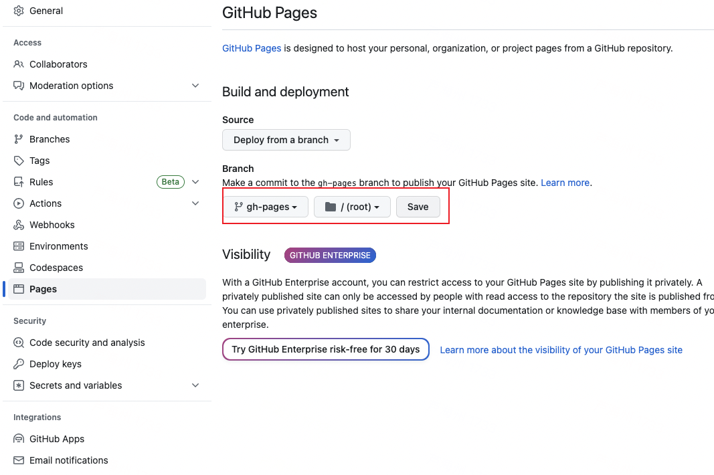
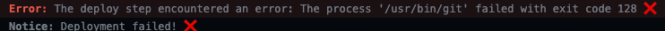
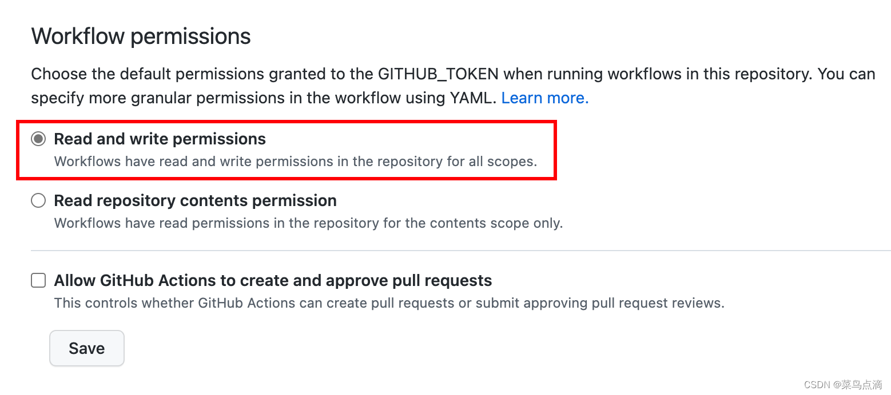

利用GitHub Page-从零配置实现 自动化构建并部署Next.js项目（一）
可以使用GitHub Pages 来展示一些开源项目、主持博客甚或分享您的简历。 Next.js 是一个用于构建服务器渲染 React 应用的框架，搭配使用Next.js使用GitHub Pages可以定制化展示自己的网站。
🕹开发环境
- Next：13.4.7
- Node: 18.12.0
1. GitHub 新建仓库
仓库名有两种设置方式，两种方式都会介绍配置方法，本文主要使用有基础路径的方式
-
无基础路径，直接访问 （https://CodeBrickApe.github.io） 仓库名设置为
{gitHub 用户名}+.github.io，仓库名比较特殊，必须要是 github.io 为后缀结尾的，比如CodeBrickApe.github.io。GitHub Pages 允许每个账户创建一个名为 {username}.github.io 的仓库。
-
有基础路径 仓库名正常设置，访问时需要拼接基础路径 （https://CodeBrickApe.github.io/github-pages-next）

2.创建Next应用
执行创建命令并运行项目 创建过程中依赖项根据自己日常使用习惯，选择配置
npx create-next-app@latest --typescript github-pages-next cd github-pages pnpm dev

package.json文件

修改next.config.js文件
启用静态导出，请更改 中的 next.config.js 输出模式：
/** @type {import('next').NextConfig} */ const repo = 'github-pages-next' // 用于为静态资源（如图像、样式表、JavaScript 文件等）设置 URL 前缀 // 这在将应用部署到自定义域名或 CDN 上时特别有用，因为它允许您将静态资源存储在不同的位置 let assetPrefix = `/${repo}/` // 用于为应用设置基础路径 // 这在将应用部署到子目录下时特别有用，因为它允许您指定应用所在的目录 let basePath = `/${repo}` const isGithubActions = process.env.GITHUB_ACTIONS || false if (isGithubActions) { const repo = process.env.GITHUB_REPOSITORY.replace(/.*?\//, '') assetPrefix = `/${repo}/` basePath = `/${repo}` } const nextConfig = { images: { unoptimized: true, // 当设置为 true 时，直接提供原始图片，不修改图片质量、 尺寸或格式 }, basePath, assetPrefix, distDir: 'out', // 指定用于自定义构建目录的名称 output: 'export', // 运行 next build 后，Next.js 将生成一个 out 文件夹，其中包含应用程序的 HTML/CSS/JS } module.exports = nextConfig
设置 GitHub Actions
配置 GitHub Actions workflow, 以便在 push时自动构建、导出和部署 静态网站到 GitHub Pages 根目录新建文件 .github/workflows/gh-pages.yml
name: Deploy to GitHub Pages on: push: branches: [ main ] # 执行的一项或多项任务 jobs: build-and-deploy: # 运行在虚拟机环境ubuntu-latest # https://docs.github.com/zh/actions/using-workflows/workflow-syntax-for-github-actions#jobsjob_idruns-on runs-on: ubuntu-latest steps: - name: 获取源码 ️ uses: actions/checkout@v3 - name: Node环境版本 ️ uses: actions/setup-node@v3 with: node-version: 18 - name: 安装 Pnpm uses: pnpm/action-setup@v2 id: pnpm-install with: version: 7 run_install: true - name: 安装依赖 ⚙️ run: pnpm install - name: 打包 ️ run: | npm run build touch out/.nojekyll - name: 部署 uses: JamesIves/github-pages-deploy-action@v4 with: branch: gh-pages folder: out clean: true
推送代码
git init git add . git commit -m "init" git branch -M main git remote add origin git@github.com:AnoyiX/AnoyiX.github.io.git git push -u origin main
推送成功后，Github Actions 会自动构建，并将生成的静态文件导出到分支 gh-pages，接下来只需设置 Pages 对应的分支即可：

后续只需将代码推送到 main 分支，应用就会自动构建、自动部署。
示例代码 GitHub Repository GitHub Pages 预览页面
常见报错

原因分析： 默认情况下，新存储库没有适当的工作流权限。
解决方案：
- 转到存储库Setting
- 选择Actions>>>General
- 在"工作流权限(Workflow permissions)"中，选择Read and write permissions
